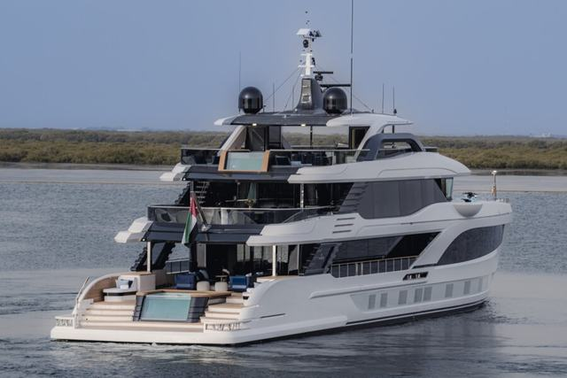
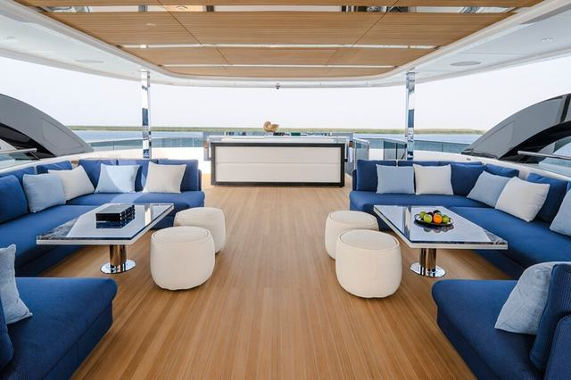
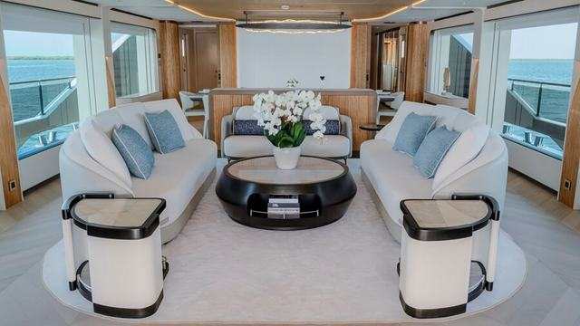
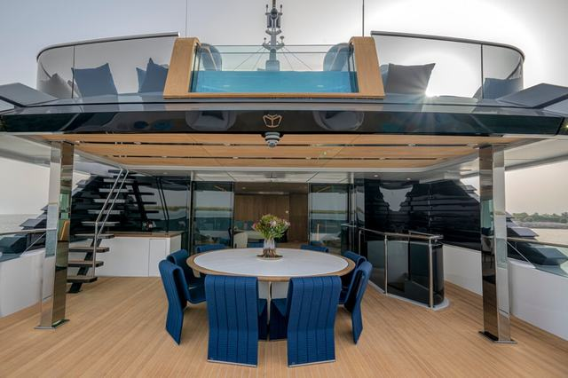

Designed as a floating villa rather than simply a superyacht, the two-pool Majesty 145 superyacht combines contemporary styling with everyday liveability.
The full text of this review is on yachtstyle.co. On the Arabia site it runs here, in English and Arabic, at a comfortable reading measure, with crossheads, pull quotes and full width photographs.




Photographs from the Yacht Style review of the Majesty 145.
More reviews from on board
The latest Yacht Style reviews.
All reviews


On screen: Majesty 100 Terrace A Yacht Style film